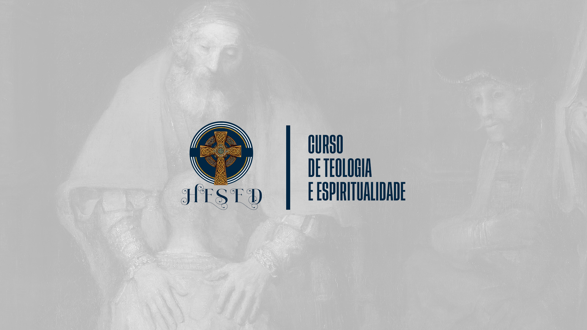

Nós siga nas redes sociais!
Nossos professores
Luiz Henrique Caracas
- Licenciado em Letras – Universidade Estadual de Santa Cruz (UESC)
- Bacharel em Teologia – Faculdade Teológica Sul Americana (FTSA)
- Mestre em Artes e Liderança Bíblica (ênfase em Novo Testamento) – Seminário Teológico Servo de Cristo (STSC)

Ana Paula Caracas
- Bacharela em Teologia – Faculdade Teológica Sul Americana (FTSA)
- Especialista em Ciências da Religião – Faculdade Teológica Sul Americana (FTSA)
Parte 1 – O Chamado e a Beleza do Evangelho
MÓDULO 1 – Vimos a Sua Glória: Teologia como Alumbramento
üìñ Conteúdo:
- A teologia nasce do encontro com o mistério de Deus, não apenas da análise racional.
- Como Deus se revela de forma pessoal e transformadora.
- O Evangelho de João: "Vinde e vede" – A resposta dos discípulos ao chamado de Jesus.
- O deslumbramento da fé: a teologia como resposta ao fascínio de Deus.
üéØ Objetivo:
- Ensinar que a fé e o conhecimento de Deus começam com um chamado, não com um sistema teórico.
- Desenvolver uma compreensão estética e devocional da revelação divina.
MÓDULO 2 – A Bíblia como o Livro do Amor de Deus
üìñ Conteúdo:
- A Bíblia como testemunho vivo da revelação.
- Como ler as Escrituras com devoção, reverência e profundidade.
- Métodos devocionais: Lectio Divina, leitura orante, hermenêutica pentecostal/carismática.
üéØ Objetivos:
- Ensinar os alunos a se aproximarem das Escrituras como um espaço de encontro com Deus, e não apenas como um livro a ser analisado.
MÓDULO 3 – O Caminho do Coração: Introdução à Espiritualidade Cristã
üìñ Conteúdo:
- O que é espiritualidade cristã e como ela se distingue da religiosidade superficial.
- As correntes históricas da espiritualidade cristã (contemplativa, carismática, ativa, monástica, apostólica).
- A relação entre conhecimento teológico e vida espiritual.
- O coração como lugar da experiência de Deus.
- A oração como resposta ao mistério de Deus.
üéØ Objetivos:
- Apresentar a espiritualidade cristã como um caminho de resposta ao chamado divino.
- Ajudar os alunos a cultivarem uma vida de comunhão com Deus que integre estudo, oração e prática.
MÓDULO 4 – Disciplinas Espirituais
üìñ Conteúdo:
- O que são as disciplinas espirituais e por que são essenciais à formação cristã.
- As disciplinas clássicas, divididas em três categorias:
- Disciplinas Interiores (Vida Secreta com Deus)
- Oração e meditação (Lectio Divina, oração contemplativa, oração carismática).
- Jejum e solitude como espaços de encontro com Deus.
- Estudo das Escrituras e renovação da mente.
- Disciplinas Exteriores (Expressão da Fé no Mundo)
- Simplicidade como prática da liberdade.
- Submissão e serviço como reflexo da humildade cristã.
- Disciplinas Comunitárias (Vivência no Corpo de Cristo)
- Confissão e exame de consciência como práticas de transformação.
- Adoração e celebração como resposta à graça de Deus.
- Direção espiritual e acompanhamento na jornada cristã.
- O papel do Espírito Santo na prática espiritual.
üéØ Objetivos:
- Ensinar que a vida espiritual exige prática e disciplina, não apenas um sentimento de conexão com Deus.
- Auxiliar os alunos a desenvolverem ritmos espirituais sustentáveis que nutram sua caminhada com Deus.
- Mostrar que as disciplinas espirituais não são um fardo, mas um caminho para a liberdade em Cristo.
MÓDULO 5 – Teologia Sistemática I: O Deus que Se Revela (Trindade, Cristologia e Pneumatologia)
üìñ Conteúdo:
- O mistério da Trindade como fundamento do amor divino.
- A centralidade de Cristo: Jesus como o ícone visível do Deus invisível.
- A ação do Espírito Santo na revelação e na vida cristã.
üéØ Objetivo:
- Mostrar que a teologia não é um sistema fechado, mas uma resposta à auto-revelação do Deus vivo.
MÓDULO 6 – Liderança Cristã: O Chamado ao Serviço
üìñ Conteúdo:
- O que significa ser um líder à luz da revelação.
- O exemplo de líderes bíblicos como Moisés, Paulo e Jesus.
- A liderança como serviço, e não como poder.
üéØ Objetivo:
- Equipar os alunos para liderarem com humildade, sabedoria e coragem.
Parte 2 – O Drama da Existência e o Chamado à Cruz
MÓDULO 7 – Teologia Sistemática II: O Drama da Queda e a Esperança Escatológica (Hamartiologia, Soteriologia e Escatologia)
üìñ Conteúdo:
- O mistério do mal e do sofrimento humano.
- O pecado como desfiguração do ser humano e distorção da criação.
- Cristo como Aquele que assume sobre si a dor do mundo e a redime.
- A esperança da restauração final e da consumação do Reino.
- A escatologia como o horizonte da fé cristã.
üéØ Objetivos:
- Levar os alunos a compreenderem o drama da existência sem clichês ou simplificações.
- Mostrar como a escatologia dá sentido à vida cristã e à missão da Igreja.
MÓDULO 8 – A Arte de Pregar
üìñ Conteúdo:
- A pregação como proclamação do mistério de Deus.
- Estrutura de um sermão impactante.
- Como evitar clichês e superficialidade na pregação.
üéØ Objetivo:
- Desenvolver pregadores que não apenas comuniquem doutrina, mas revelem Cristo através da palavra.>
Parte 3 – A Verdade e o Chamado à Testemunha
MÓDULO 9 – Igreja, Culto e Liturgia
üìñ Conteúdo:
- O culto como espaço de encontro com Deus.
- O papel do Espírito Santo na condução do culto.
üéØ Objetivo:
- Ensinar que o culto é a manifestação visível do Reino.
MÓDULO 10 – Direção Espiritual e Aconselhamento Cristão
üìñ Conteúdo:
- Como guiar pessoas na jornada da fé.
- Aconselhamento cristão e discernimento espiritual.
üéØ Objetivo:
- Formar líderes capazes de cuidar de almas com sabedoria e discernimento.
MÓDULO 11 – Beleza, Bondade e Verdade na Educação Cristã
üìñ Conteúdo:
- A educação cristã como formação integral.
- O professor como testemunha e não apenas transmissor de conhecimento.
üéØ Objetivo:
- Mostrar como a beleza e a verdade transformam a pedagogia cristã.
MÓDULO 12 – A Missão da Igreja e o Chamado à Cidade
üìñ Conteúdo:
- O desafio da Igreja no mundo moderno.
- Como pregar e viver o Evangelho de maneira relevante.
üéØ Objetivo:
- Mostrar que a teologia precisa tocar o mundo real e transformar vidas.
Público Alvo
- Líderes e membros de igrejas que desejam aprofundar sua fé e prática ministerial.
- Professores de Escola Bíblica e discipuladores que buscam uma abordagem sólida e inspiradora.
- Estudantes de teologia e espiritualidade interessados em uma formação integrativa e carismática.
- Qualquer pessoa que deseja experimentar uma caminhada cristã profunda, unindo razão, devoção e prática.
Metodologia
- Aulas ao vivo com interação direta entre alunos e professor.
- Estudos de caso e leituras complementares para aprofundamento teológico.
- Mentoria teológica para acompanhamento personalizado na jornada do conhecimento.
- Atividades práticas e imersão espiritual para desenvolver um discipulado encarnado.
Conclusão
O Curso de Teologia e Espiritualidade Cristã não √© apenas um programa acad√™mico; √© um convite a uma experi√™ncia transformadora. Aqui, teologia não será apenas estudo, mas adora√ß√£o; não será apenas racioc√≠nio, mas encontro; não será apenas tradi√ß√£o, mas vida vivida no Esp√≠rito. Se voc√™ deseja conhecer mais profundamente a Deus e ser moldado pela verdade do Evangelho, este curso √© para voc√™! üöÄ Venha embarcar nessa jornada e redescobrir a teologia como um chamado ao mist√©rio e √† gl√≥ria de Cristo.